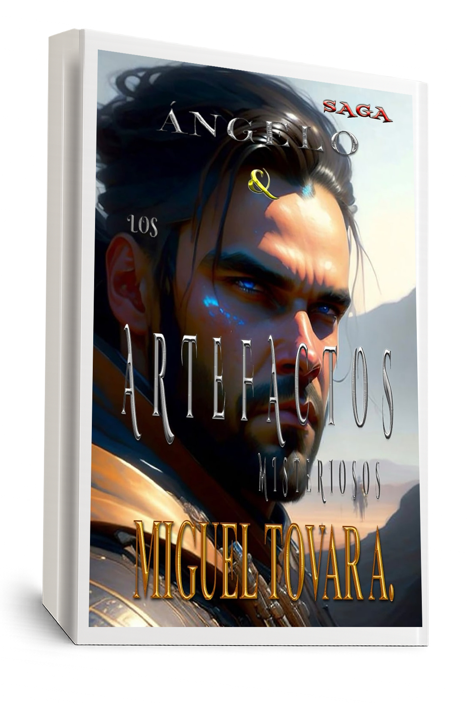

Una travesía peligrosa y reveladora en busca de artefactos con poderes cósmicos que pueden cambiar el destino del planeta. La saga alcanza un nuevo nivel cuando Ángelo se embarca en una misión para recuperar objetos milenarios escondidos en distintos rincones del mundo.
Cada artefacto guarda un poder que puede liberar o destruir. Con aliados inesperados y enemigos cada vez más poderosos, Ángelo debe superar retos físicos y espirituales para cumplir con su destino.

¿Aún no lees los anteriores? Ángelo & El Proyecto Ditóx y Ángelo & Los Gadianes
¿Qué secretos se revelarán después? Muy pronto: Ángelo & Los Khoorx 🧠🌌
¿Quieres conocer el universo completo? Explora La Saga de Ángelo